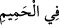
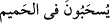
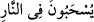
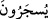
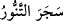

“__WORD__de “ : içinde” harfi kullanılarak bu suyun harâretinin, tıpkı zarfın, içindeki
şeyi kuşatması gibi, oraya girenleri çepeçevre kuşatacağına işâret edilmektedir. Öyle ki
kaynar suyun tam ortasındalar ve burada yüzüyorlar gibi.
Mukatil şöyle diyor: “__WORD__ ifâdesi, aşağıdaki âyette belirtildiği üzere
“cehennem ateşinin harareti içinde yüzdüklerinde” demektir: “«Tadın şu Sekar
ateşinin
dokunuşunu!»
denilerek
ateşin
harâreti
içerisinde
yüzüstü
sürüklenecekleri gün.” (el-Kamer 54/48) Ancak, tefsir ettiğimiz âyette olduğu gibi “__WORD__ ifadesinin de “yüzüstü ateşe sürüklenecekleri” şeklinde olması daha
zâhirdir.
Hikâye edildiğine göre Ferazdak’ın karısı Nevvâr vefat ettiğinde Basra’nın önde
gelenleri ve Hasan Basrî de cenazeyi çıkarıp uğurlayanlar arasında idi. Hasen, bir ara
Ferazdak’a: “Şu gün için neler hazırladın?” diye sorunca, şâir “seksen seneden beri
yaptığım «Allah’tan başka hiçbir ilah bulunmadığına» dair şehâdetimi hazırladım”
demiş ve hanımının defnedilmesinden sonra kabrin yanında ayakta:
“Makbul değilsem, korkarım esas kabir ötesi âlemden!
Yani çok daha alevli ve daha fazla rahatsız eden:
Kıyâmet gününden. Geldiğinde ben Ferazdak’a
İtip kakalayarak götüren sert bir komutan,
Kesin kaybetmiştir vurularak boynuna bir demir halka
Ve gözleri morarmış bir vaziyette ateşe götürülen”
şeklinde bir şiir inşad etmiş ve hem kendisi ağlamış, hem de oradakileri ağlatmıştı.
Böyle zincirlerle kaynar suya itilip sürüklendikten “sonra da ateşte yakılacaklardır.”
yâni kendilerini çepeçevre kuşatan ateşle tutuşturulacaklardır. “__WORD__ fiili, tandırın
odunla doldurulup tutuşturulmasını konu alan “__WORD__ fiilinden gelmektedir. Ateşe
girip ateş tarafından çepeçevre kuşatılan ve karınları ateşle doldurulan bir kimsenin en
acı ve en yakıcı bir azapla azaba uğratılmış olması beklenir. İşte bu sebeple
cehennemlikler hem de ateşin içinde oldukları halde ateşle doldurulup yakılacaklardır.
Âyette anlatılmak istenen, cehennemliklerin türlü türlü azaplara uğratılacakları ve bir
renkten diğerine girip duracaklarıdır.
Keşfü’l-esrâr’da şöyle der:
Cehennemliklerin azâbı çeşitlidir. Biri: “selâsil”dir ki Zebânîlerin elinde ateşten
zincirlerdir. Bunlarla cehennemlikleri bağlarlar. Her bir zincir yetmiş arşındır; her bir
arşın yetmiş halka. Eğer o halkalardan biri dünyadaki dağlardan birinin üzerine konacak
olsa, kalay gibi erirdi. O halkayı kâfirlerin ağzına koyarlar ve çekerler. O zincirlerle
onları “hamîm”e çekerler. “Hamîm”, kaynayan sıcak bir sudur. Eğer bir kadehi
dünyadaki denizlere dökülecek olsa, hepsi zehir kesilir. Ondan bir kadeh kâfirlerin
eline verilir. Onun yüzündeki deri, et, göz, burun ne varsa hepsi o kadehin içine düşer.